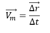
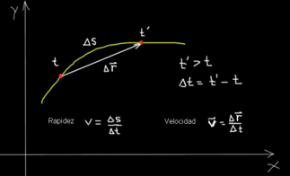

El M.R.U es el denominado movimiento rectilíneo uniforme, es decir, es un movimiento, en línea recta, y como nos dice uniforme, quiere decir que va todo el rato a la misma velocidad, cuando algo ni aumenta ni disminuye su velocidad, es porque su aceleración es cero.
VelocidadLa velocidad es una magnitud vectorial que mide el cambio del vector desplazamiento en un intervalo de tiempo. Como definición geométrica, es el resultado de la división de cambio del desplazamiento respecto al tiempo. Esta dada en las siguiente dimensión: L/T=L*T^(-1), y en las siguientes unidades: m/s;km/h;ft/s. Ecuacion |
 |
DERECHOS RESERVADOS © PHYSICS